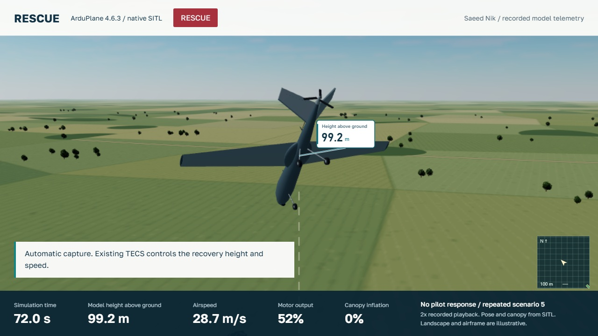
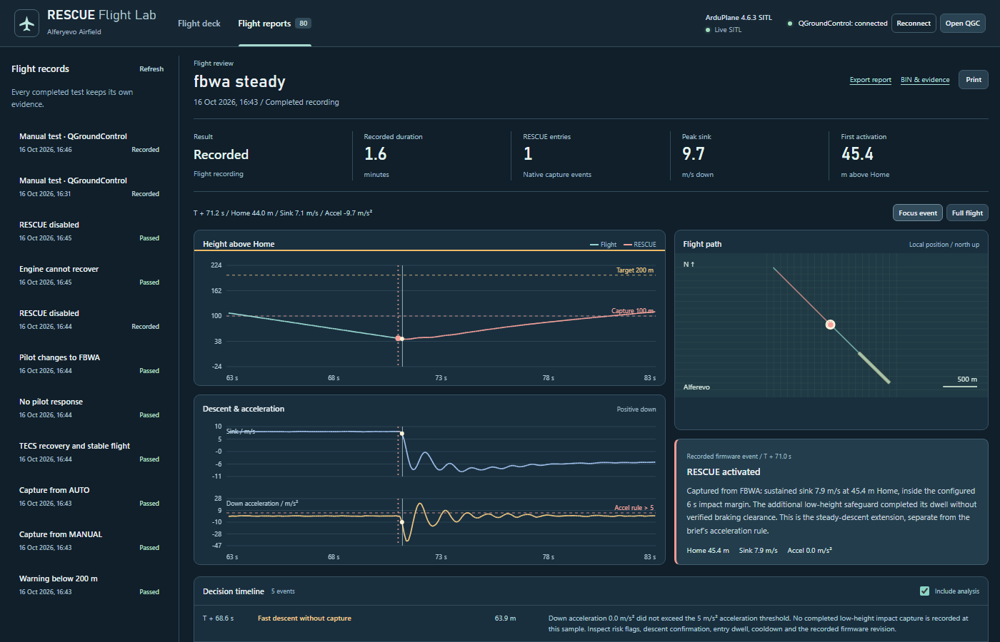

Autonomous aircraft recovery
RESCUE
Specification response, implementation and flight evidence

1 Context and objective
Rescue in the flight firmware
- Warn the operator when qualifying falling starts.
- If falling continues below the trigger height, capture control and recover.
- Return control to the pilot, or request the parachute when there is no response.
Section 3 allows justified additional settings. Sections 4.1, 4.4 and 5 require persistence, stability and hysteresis; scenario 6 requires a safe response to failed recovery.
Early takeoff false alarms and a steep steady descent with near-zero acceleration exposed different problems. The Word response distinguishes refinements of the requirements from the added entry and stick-acknowledgment paths.
A separate repeat of scenario 5 records the full modeled canopy sequence. It is not another unique acceptance scenario.
2 General behavior
Home-relative decision height and the model’s height above ground are separate measurements.

3 Custom parameters
Five settings come directly from the brief. The 21 additions define persistence, stability, recovery failure and optional acknowledgment; they do not replace TECS.
| Parameter | Value | Purpose |
|---|
Show the 21 justified additional settings
| Parameter | Value | Purpose |
|---|
4 1 and 4 2 Detection and control capture
The original acceleration rule
Confirm at least 1 s of continuous descent and 2 m measured height loss. Downward acceleration must then exceed 5 m/s² for 0.2 s. Warn below 200 m Home; capture below 100 m when armed and flying.
Why a steady-descent safeguard was added
A recorded flight reached about 30 m Home at 7.67 m/s sink while downward acceleration was near zero. Height, confirmed sink and short time to Home now form an additional entry path.
This explicitly extends section 4.2. Ordinary shallow descent or low height alone does not activate it. Verified braking and one bounded pull-out grace apply only to the added path.
4 3 Recovery with existing TECS
Restore useful energy and level the wings
Existing TECS manages the 200 m Home target and airspeed. Existing attitude controllers command zero roll. The main climb requests the highest available throttle within existing output, power and slew limits.
Near the target, TECS settles the aircraft. Full throttle does not prove a climb: increased airspeed can also count as recovery progress. No separate pitch or throttle control law was added.
Emergency entry seeds the existing TECS pitch-demand slew state inside configured limits to avoid delay after a near-vertical dive. Energy and anti-stall control remain active.
4 4 Stable recovery and pilot handover
Stable means all conditions hold together
- 200 ±5 m Home and vertical speed within ±1 m/s.
- Roll and pitch within ±10°, body rate at most 15°/s.
- Airspeed at least the profile minimum of 10 m/s.
- All criteria persist continuously for 2 s.
Only then does the five-second pilot window start. A valid mode change is accepted. Optional fresh deliberate stick input selects FBWA; set RSC_STK_EN=0 for mode-change-only acknowledgment.
4 5 Parachute
Release through AP_Parachute
Without a valid pilot response, request the parachute, cut the motor and disarm. The release output delay is 0.5 s in this profile; modeled inflation takes 1.5 s.
Start a fresh simulation to test again with a packed canopy.
Reaching the model ground is not qualification of a real parachute or airframe.
5 Edge cases and safe degradation
Measure recovery rather than throttle position
The 10 s progress window accepts at least 3 m height gain or equivalent total-energy-height gain. Acceleration toward a useful airspeed can count even before the climb begins.
Persistent sink, severe instability, low height, urgent predicted Home crossing, invalid navigation data and the overall 90 s deadline can terminate failed recovery.
Angles and body rates must remain stable; crossing zero roll during a rotation is not enough. RSC_ENABLE=0 disables supervisor intervention.
Original failed-recovery evidence
Engine failure after capture led to a no-progress parachute request at 73.54 m Home.
Home is a reference datum, not terrain clearance. The supplied model cannot establish real-aircraft or rising-terrain safety.
6 Required deliverables
The first five folders map directly to section 6 of the original specification. The English Word response and recorded web presentation are included as additional explanatory material.
7 Required SITL scenarios
Seven scenarios, eight flights. MANUAL and AUTO capture use separate runs. The 14 regressions are separate engineering coverage.
Decision evidence and reporting
Where and why RESCUE acted
Reports synchronize native flight time, Home height, acceleration, sink, location and reason bits. Selecting an event focuses the charts and flight path on the decision.
- 32
- Additional predicted-impact entry
- 64
- Verified braking with stopping clearance
- 128
- Bounded grace for an actual pull-out response
Manual recordings remain labelled Recorded. They are not changed to Pass without checking the evidence. Reports and original BINs can be exported.

Watch the steady-descent safeguard replay
Download and run
Two launchers and one flight firmware
QGC-Manual-Ground.exeDisarmed aircraft on the runway at 1x. Arm, take off and fly directly in QGC without an automated scenario.
RESCUE-Flight-Lab.exeLocal panel, QGC connection and an automatic 240 m demonstration.
What the evidence establishes
The same binary passed 22 unique native cases. A further scenario-5 repeat records full canopy inflation and model ground contact. The complete ten-case attended QGC campaign remains incomplete.
This is PC SITL, not a Pixhawk flash image or qualification of a real parachute. Steady-descent protection and stick acknowledgment are disclosed extensions.
4bfa07c8b3f1febac6045f91058c5eab49b57801fd45eec16702940c54c2fe66Extract the whole ZIP. Keep the bundled dependencies beside the executable launchers.